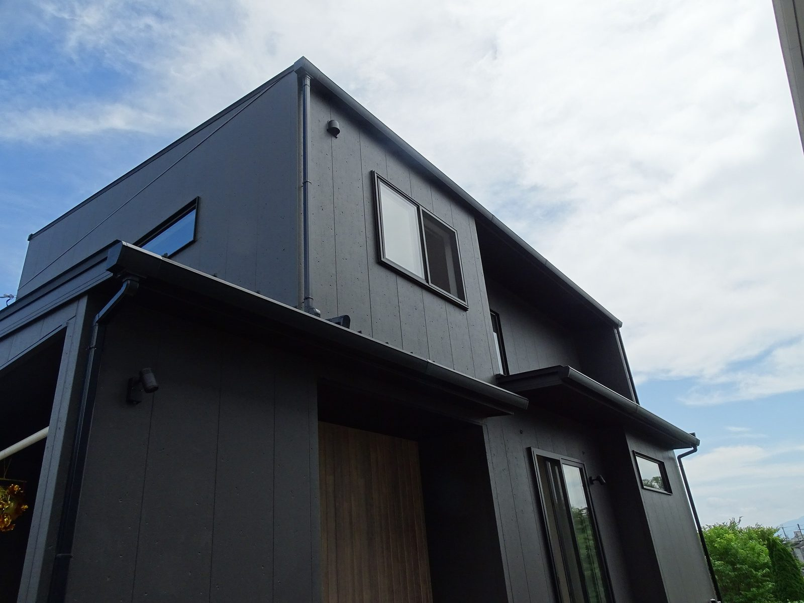

私も現場でよく見ますが、壁の少ない広いリビングや2階が前に張り出したかたちは見た目がよくても、図面では見えない負担がかかっていることがあります。
この話を、大工歴43年の社長が模型を使って説明しましたが、そこで大事になるキーワードが直下率です。
直下率とは、柱がそろっている割合
2階建ての家には1階にも2階にも柱があって、2階の柱の真下に1階の柱がある、これがそろっている状態を直下率100％と呼びます。
動画では、社長がわざと柱をずらした模型を見せていますが、2階の柱を受ける柱が1階にないので、見ただけでバランスが悪いと分かります。
柱がそろっていると、2階と屋根の重さが1階の柱をまっすぐ通って基礎まで届くので、力もまっすぐ下へ伝わります。
逆に柱がそろっていないと、2階の重さをいったん梁が横から受け止めることになるので、梁にも金物にも余分な力がかかります。
最近の間取りは、壁と廊下を減らして動きやすくする形が主流で、1階に広いリビングを取り、2階には部屋をいくつも並べることが多いので、つまり支える柱が少ない1階の上に、柱の多い2階が乗ることになります。
屋根と2階を支えるのは1階ですから、その1階の柱が少なくなるほど、地震のときに不利になります。
よくある形①2階が張り出した家
1階より2階が前に出ているかたちはオーバーハングと呼ばれていて、下に駐車場や玄関を取れるので狭い土地でよく使われます。
凹凸が出て外観に変化もつきます。
ただし、張り出した部分の下には支えがありません。
動画では模型を上から押してどう変形するかを見せていますが、てこの力がかかるので梁にも柱にも金物にも負担が集まります。
それに、暮らしに関わる弱点もあります。
- 床が冷えやすい張り出した部分の床下は外気なので、1階の床の上とは条件が違います。
断熱の施工も難しくなります - 揺れを感じることがある張り出しが大きいほど先端は揺れやすくなります。
前の道路の交通量が多いと大きな車が通るたびに小さな揺れを感じます

よくある形②スキップフロアの家
1階の床と2階の床の間にもう1枚の床をつくる1.5階と呼ばれる空間も、リビングから見上げたときの見え方が良いので人気があります。
ただ、構造から見るとこの形は複雑で、中間の床を支えるために1階と2階を支えている柱を、横から押す力が生まれます。
柱は本来、上からの重さに耐えるための材料なので、横から押される前提になると木の組み方そのものが複雑になります。
社長は、建ててから2年から5年ではまだ分からないと言いますが、そのあとにクロスの割れや床の沈みとして出てくることがあるので、採用するなら計算で確かめておきましょう。
好きな間取りは、計算で確かめる
ここまで読むと、好きな間取りを諦める話に見えるかもしれませんが、そうではありません。
柱がずれるならその分を梁で受けて、梁が折れないように20cmの材料を27cmに、30cmにして、下に基礎がなければ基礎を足すというふうに、こうして一本ずつ確かめていくのが許容応力度計算です。
もうひとつ、壁量計算というやり方もありますが、こちらは壁の量で建物の強さを見る方法で、上からの重さがどう伝わるかまでは細かく追いません。
どちらの計算でも耐震等級3と表示することはできますが、同じ「等級3」でも確かめた中身が違います。
ただ、義務になったのは提出までで、計算のやり方までは決められていません。
なので、どの計算をしているかは聞かないと分かりません。
住宅会社に聞いてほしいこと
動画の中で、社長がいちばん伝えたかったのはこの一言です。
この場ですぐ答えが返ってこないときは、そこから先を慎重に進めてください。
もうひとつ、社長が心配していたことがありますが、近ごろは送った図面を数千円で描き直してくれるサービスがあって、平面の図ではたしかに広くて素敵に見えても、模型に起こすと柱の位置がまるで違うことがありますから、その間取りをそのまま持ち込んで「これでできますか」と聞くのはおすすめできません。
シバサンホームは、全棟で確かめています
シバサンホームは全棟、許容応力度計算による耐震等級3で、間取りの自由度を下げないために計算に手間をかけています。
シバサンホームは、まず命が守られることを考え、そのうえで暮らしやすい間取りを考えます。
この順番で進めています。
まとめ
- 直下率＝1階の柱の上に2階の柱がどれだけ乗っているか
- 広いリビングの上に部屋が並ぶ形は、支える柱が減りやすい
- 張り出した2階は、てこの力がかかり、床も冷えやすい
- スキップフロアは柱を横から押す力が生まれ、構造が入り組む
- 諦める必要はなく、許容応力度計算で確かめましょう
- 聞くのは一言で、「壁量計算ですか、許容応力度計算ですか」と確認してください

奈良の工務店シバサンホームで、
土地さがし・資金計画・打合せの窓口をしています。
モットーはスピード・誠実さ・楽しさ。